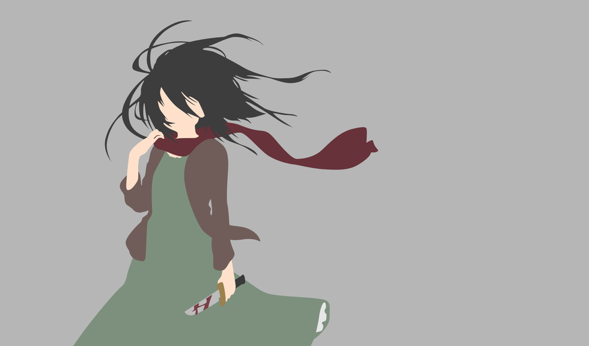

Mikasa Ackerman es la hermana adoptiva de Eren Jaeger. Le debe mucho a él, desde que la salvó de los secuestradores que pretendían convertirla en esclava. Pasa la mayor parte de su tiempo juntos. Así pues, aunque a veces no esté de acuerdo con lo que hace, lo protege de cualquiera que trate de hacerle daño. Ella, junto con Armin, se une al Cuerpo de Exploración para ayudar a Eren a retomar el Muro María. La consideran un genio militar y fue la primera de su clase en su promoción.
Mikasa Ackerman cambió su personalidad drásticamente tras el asesinato de sus padres, volviéndose bastante reservada, ya que cuando se revela su pasado se ve que Mikasa, antes de la tragedia, solía ser una niña alegre. Sin embargo, lo da todo por las personas que le importan, ya que las ve como si fueran su familia. Tiene un fuerte sentido de la justicia, pero siempre seguirá y obedecerá a Eren e intentará mantenerlo a salvo.
Debido a la necesidad de proteger a Eren, que a menudo se escapa en busca de problemas, Mikasa había perfeccionado sus habilidades para ser una luchadora con talento a una edad muy temprana, a menudo lanzando a chicos mayores que ella con facilidad, ganando así su reputación.
Con estas habilidades prodigiosas, junto con su propia voluntad letal y extraordinaria que muestra cuando lucha contra los titanes y que pocas veces se ha visto entre los soldados, reclutas o veteranos por igual.
Los Ackerman fueron una de las familias que vivieron en el Imperio Eldiano mucho antes de la construcción de las murallas, siendo el resultado imprevisto de los experimentos llevados a cabo en la Gente de Ymir a través de la ciencia de los titanes, fueron creados con el propósito de proteger a los reyes y desde entonces actuaron como la mano derecha de la monarquía, a quienes se les confió la supervivencia de sus miembros.
Además de una inmunidad natural a la manipulación de memoria del Titán Fundador, los miembros de la familia Ackerman poseen otro rasgo único, el "poder despertado". Este poder no despierta por sí solo y para lograr usarlo, es necesario encontrar a un "anfitrión" (es decir, una persona a la cual proteger) y recibir alguna orden de dicho individuo en condiciones cercanas a la muerte. Esta reacción hará que los instintos propios de la sangre Ackerman sobre proteger a su huésped fluyan, los cuales derivan del hecho de que estos individuos fueron diseñados para resguardar a los reyes de Eldia.
Un ejemplo de lo anteriormente citado fue el día en el que los padres de Mikasa fueron asesinados por traficantes de personas, Mikasa fue mantenida cautiva hasta que Eren la rescató asesinando a dos de sus secuestradores.
